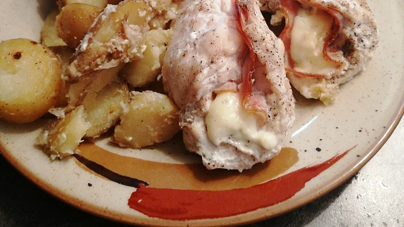

Jednoduchý a chutný recept na kuřecí závitky plněné nivou a slaninou, podávané s pečenými bramborami zalitými smetanou.
Kuřecí prsa naklepeme jako na řízky.
Na každý plátek masa položíme kousek slaniny a trochu nivy. Zabalíme a zajistíme špejlí.
Závitky rozložíme na plech.
Brambory nakrájíme na osminky nebo kolečka. Přidáme je na plech k masu, osolíme, opepříme a zalijeme smetanou.
Pečeme v troubě předehřáté na 200 °C dozlatova.